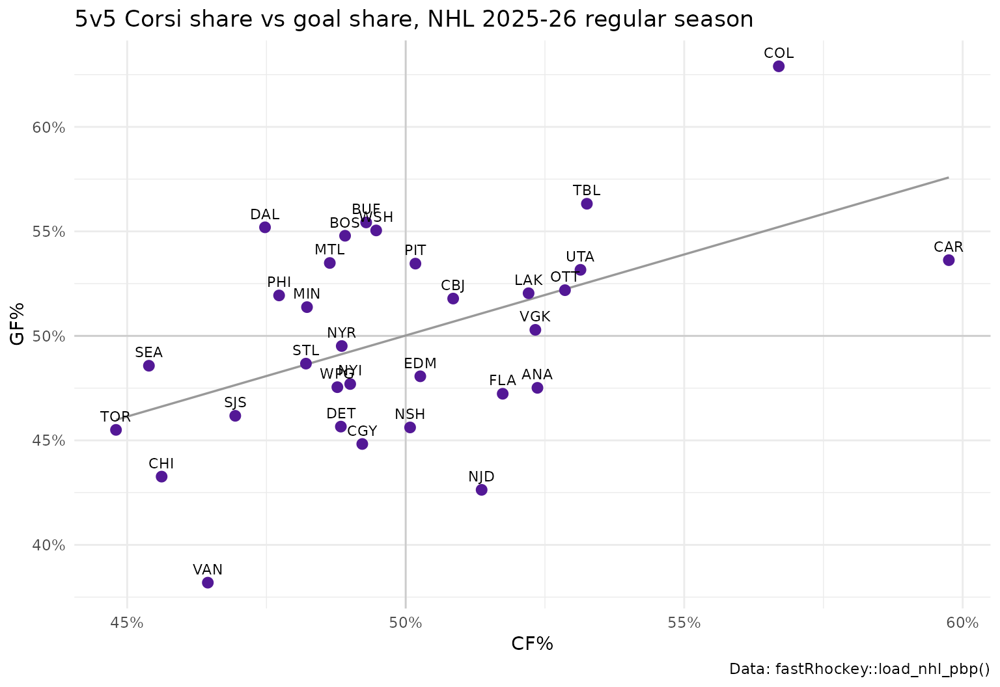
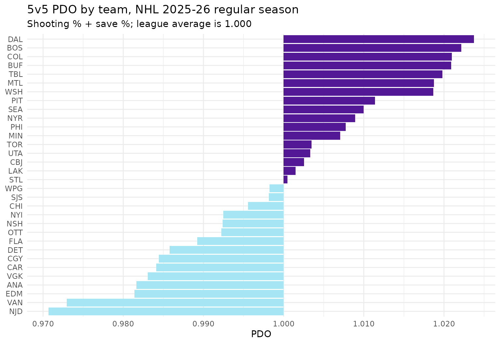

Corsi, Fenwick and PDO in R: Hockey Shot-Share Metrics with fastRhockey
Saiem Gilani, Ben Howell
Source:vignettes/articles/hockey-advanced-metrics-corsi-fenwick.Rmd
hockey-advanced-metrics-corsi-fenwick.RmdShot-share metrics measure which team had the puck going
toward the right net. Goals are rare, about three per team per
game, so a season of goal differential is noisy. Shot attempts happen
ten to twenty times as often, and a team that out-attempts its opponents
tends to out-score them over time. This article builds the standard
shot-share metrics from fastRhockey NHL play-by-play, for
teams and for individual players, at 5-on-5.
What you’ll learn
- How Corsi, Fenwick, shots, goals and expected goals relate to each other.
- Which
fastRhockeycolumns identify a shot attempt, the shooting team and the strength state, including one trap with blocked shots. - How to compute CF%, FF%, SF%, GF%, xGF%, Sh%, Sv% and PDO for every team at 5v5.
- How to compute on-ice Corsi for individual players from the on-ice skater columns.
If you are new to the package, start with Getting started with fastRhockey.
What are Corsi, Fenwick and PDO?
| Metric | Counts | Share |
|---|---|---|
| Corsi (CF / CA) | All shot attempts: shots on goal, goals, missed shots and blocked shots | CF% = CF / (CF + CA) |
| Fenwick (FF / FA) | Unblocked attempts: Corsi minus blocked shots | FF% |
| Shots (SF / SA) | Shots on goal, including goals | SF% |
| Goals (GF / GA) | Goals | GF% |
| Expected goals (xGF / xGA) | The sum of the xg of unblocked attempts |
xGF% |
Shooting percentage (Sh%) is GF / SF. Save percentage (Sv%) is 1 - GA / SA. PDO is Sh% + Sv%. League-wide every goal is one team’s shooting and the other’s goaltending, so league PDO is exactly 1. A team far above 1 is usually riding hot shooting or goaltending that tends to fade.
Why 5v5? Power plays inflate one team’s attempts for reasons unrelated to how well it plays at even strength, and empty-net time distorts both sides. Analysts compare teams at 5-on-5, where both sides have five skaters and a goalie.
Which columns do I need?
library(fastRhockey)
library(dplyr)
library(ggplot2)
pbp <- load_nhl_pbp(seasons = 2026)
pbp %>%
filter(event_type %in% c("SHOT", "MISSED_SHOT", "BLOCKED_SHOT", "GOAL")) %>%
count(event_type)
#> # A tibble: 4 × 2
#> event_type n
#> <chr> <int>
#> 1 BLOCKED_SHOT 43664
#> 2 GOAL 8836
#> 3 MISSED_SHOT 41811
#> 4 SHOT 69507-
event_type:SHOT,MISSED_SHOT,BLOCKED_SHOTandGOALare the four kinds of shot attempt. -
event_team_abbr: the team credited with the event. ForBLOCKED_SHOTit is the blocking team. The shooter isevent_player_1_nameand the blockerevent_player_2_name. You must flip the team to get the shooting side. -
strength_state: skaters on the ice as"<event team>v<opponent>". For 5v5 the order doesn’t matter. -
season_type:"R"for the regular season,"P"for the playoffs. -
period_type: drop"SHOOTOUT"rows; shootout attempts are not part of the game’s run of play. -
xg: expected goals for unblocked attempts (see the NHL xG model article).
pbp %>%
filter(event_type == "BLOCKED_SHOT") %>%
select(event_team_abbr, event_player_1_type, event_player_1_name,
event_player_2_type, event_player_2_name) %>%
head(3)
#> # A tibble: 3 × 5
#> event_team_abbr event_player_1_type event_player_1_name event_player_2_type
#> <chr> <chr> <chr> <chr>
#> 1 CHI Shooter Brad Marchand Blocker
#> 2 CHI Shooter Mackie Samoskevich Blocker
#> 3 FLA Shooter Connor Murphy Blocker
#> # ℹ 1 more variable: event_player_2_name <chr>How do I compute team Corsi and Fenwick at 5v5?
First, label each regular-season attempt with its shooting and defending team.
attempts <- pbp %>%
filter(
season_type == "R",
period_type != "SHOOTOUT",
event_type %in% c("SHOT", "MISSED_SHOT", "BLOCKED_SHOT", "GOAL")
) %>%
mutate(
shooting_team = if_else(
event_type == "BLOCKED_SHOT",
if_else(event_team_abbr == home_abbr, away_abbr, home_abbr),
event_team_abbr
),
defending_team = if_else(shooting_team == home_abbr, away_abbr, home_abbr)
)
attempts_5v5 <- attempts %>% filter(strength_state == "5v5")
nrow(attempts_5v5) / nrow(attempts)
#> [1] 0.7918631About 79% of regular-season attempts happen at 5v5.
Then count every attempt twice, once for the shooting team and once against the defending team, and summarise.
team_5v5 <- bind_rows(
attempts_5v5 %>% mutate(team = shooting_team, side = "for"),
attempts_5v5 %>% mutate(team = defending_team, side = "against")
) %>%
group_by(team) %>%
summarise(
CF = sum(side == "for"),
CA = sum(side == "against"),
FF = sum(side == "for" & event_type != "BLOCKED_SHOT"),
FA = sum(side == "against" & event_type != "BLOCKED_SHOT"),
SF = sum(side == "for" & event_type %in% c("SHOT", "GOAL")),
SA = sum(side == "against" & event_type %in% c("SHOT", "GOAL")),
GF = sum(side == "for" & event_type == "GOAL"),
GA = sum(side == "against" & event_type == "GOAL"),
xGF = sum(xg[side == "for"], na.rm = TRUE),
xGA = sum(xg[side == "against"], na.rm = TRUE),
.groups = "drop"
) %>%
mutate(
CF_pct = CF / (CF + CA),
FF_pct = FF / (FF + FA),
SF_pct = SF / (SF + SA),
GF_pct = GF / (GF + GA),
xGF_pct = xGF / (xGF + xGA),
Sh_pct = GF / SF,
Sv_pct = 1 - GA / SA,
PDO = Sh_pct + Sv_pct
) %>%
arrange(desc(CF_pct))
team_5v5 %>%
select(team, CF, CA, CF_pct, FF_pct, xGF_pct, GF_pct, PDO) %>%
mutate(across(ends_with("pct") | matches("PDO"), ~ round(.x, 3))) %>%
head(10)
#> # A tibble: 10 × 8
#> team CF CA CF_pct FF_pct xGF_pct GF_pct PDO
#> <chr> <int> <int> <dbl> <dbl> <dbl> <dbl> <dbl>
#> 1 CAR 4620 3112 0.598 0.589 0.564 0.536 0.984
#> 2 COL 4613 3523 0.567 0.559 0.576 0.629 1.02
#> 3 TBL 3847 3377 0.533 0.524 0.539 0.563 1.02
#> 4 UTA 4005 3532 0.531 0.529 0.528 0.532 1.00
#> 5 OTT 3798 3387 0.529 0.537 0.549 0.522 0.992
#> 6 ANA 4184 3806 0.524 0.525 0.503 0.475 0.982
#> 7 VGK 3956 3604 0.523 0.528 0.546 0.503 0.983
#> 8 LAK 4117 3769 0.522 0.522 0.52 0.52 1.00
#> 9 FLA 3758 3505 0.517 0.509 0.503 0.472 0.989
#> 10 NJD 4013 3800 0.514 0.513 0.49 0.426 0.971A quick check: league-wide, goals for equal goals against, so PDO averages out to 1.
team_5v5 %>%
summarise(league_sh = sum(GF) / sum(SF), league_sv = 1 - sum(GA) / sum(SA)) %>%
mutate(league_pdo = league_sh + league_sv)
#> # A tibble: 1 × 3
#> league_sh league_sv league_pdo
#> <dbl> <dbl> <dbl>
#> 1 0.0952 0.905 1Does shot share predict goal share?
ggplot(team_5v5, aes(x = CF_pct, y = GF_pct)) +
geom_hline(yintercept = 0.5, colour = "grey80") +
geom_vline(xintercept = 0.5, colour = "grey80") +
geom_smooth(method = "lm", se = FALSE, colour = "grey60", linewidth = 0.6) +
geom_point(colour = "#531896", size = 2.5) +
geom_text(aes(label = team), vjust = -0.8, size = 3) +
scale_x_continuous(labels = scales::percent) +
scale_y_continuous(labels = scales::percent) +
labs(
title = "5v5 Corsi share vs goal share, NHL 2025-26 regular season",
x = "CF%", y = "GF%",
caption = "Data: fastRhockey::load_nhl_pbp()"
) +
theme_minimal()
team_5v5 %>%
summarise(
cor_CF_GF = cor(CF_pct, GF_pct),
cor_FF_GF = cor(FF_pct, GF_pct),
cor_xGF_GF = cor(xGF_pct, GF_pct)
) %>%
round(3)
#> # A tibble: 1 × 3
#> cor_CF_GF cor_FF_GF cor_xGF_GF
#> <dbl> <dbl> <dbl>
#> 1 0.497 0.55 0.755Here xGF% tracks goal share more closely than raw Corsi or Fenwick, because it weights attempts by danger. Teams far off the trend line are where PDO comes in.
Which teams are running hot or cold?
team_5v5 %>%
mutate(team = reorder(team, PDO)) %>%
ggplot(aes(x = PDO - 1, y = team, fill = PDO > 1)) +
geom_col(show.legend = FALSE) +
scale_fill_manual(values = c(`TRUE` = "#531896", `FALSE` = "#A6E5F3")) +
scale_x_continuous(labels = function(x) sprintf("%.3f", x + 1)) +
labs(
title = "5v5 PDO by team, NHL 2025-26 regular season",
subtitle = "Shooting % + save %; league average is 1.000",
x = "PDO", y = NULL
) +
theme_minimal()
How do I compute on-ice Corsi for players?
A player’s on-ice Corsi counts every attempt by either team while
that player was on the ice. fastRhockey NHL play-by-play
carries the skaters on the ice for every event in home_on_1
… home_on_7 and away_on_1 …
away_on_7, with player ids in the matching
*_id columns. Goalies are in home_goalie and
away_goalie, not in the skater slots.
slots <- 1:6
on_ice_long <- function(df, side) {
name_cols <- paste0(side, "_on_", slots)
id_cols <- paste0(name_cols, "_id")
base <- df %>%
mutate(row = row_number(), team = .data[[paste0(side, "_abbr")]]) %>%
select(row, event_type, shooting_team, xg, team, all_of(name_cols), all_of(id_cols))
names_long <- tidyr::pivot_longer(base, all_of(name_cols), values_to = "player") %>%
select(row, event_type, shooting_team, xg, team, player)
ids_long <- tidyr::pivot_longer(base, all_of(id_cols), values_to = "player_id") %>%
select(player_id)
bind_cols(names_long, ids_long) %>% filter(!is.na(player_id))
}
on_ice <- bind_rows(
on_ice_long(attempts_5v5, "home"),
on_ice_long(attempts_5v5, "away")
)
player_5v5 <- on_ice %>%
group_by(player_id, player, team) %>%
summarise(
CF = sum(shooting_team == team),
CA = sum(shooting_team != team),
xGF = sum(xg[shooting_team == team], na.rm = TRUE),
xGA = sum(xg[shooting_team != team], na.rm = TRUE),
.groups = "drop"
) %>%
mutate(CF_pct = CF / (CF + CA), xGF_pct = xGF / (xGF + xGA))
player_5v5 %>%
filter(CF + CA >= 1500) %>%
arrange(desc(CF_pct)) %>%
mutate(across(c(CF_pct, xGF_pct), ~ round(.x, 3)), across(c(xGF, xGA), ~ round(.x, 1))) %>%
head(10)
#> # A tibble: 10 × 9
#> player_id player team CF CA xGF xGA CF_pct xGF_pct
#> <int> <chr> <chr> <int> <int> <dbl> <dbl> <dbl> <dbl>
#> 1 8480817 K'Andre Miller CAR 1597 988 73.8 55.6 0.618 0.57
#> 2 8482702 Logan Stankoven CAR 1300 816 67.7 46.7 0.614 0.591
#> 3 8478427 Sebastian Aho CAR 1308 822 66.4 49.8 0.614 0.571
#> 4 8480336 Sean Walker CAR 1754 1106 79.4 59.3 0.613 0.572
#> 5 8480830 Andrei Svechnikov CAR 1286 822 64.7 50.2 0.61 0.563
#> 6 8477940 Nikolaj Ehlers CAR 1221 796 58.8 43.7 0.605 0.573
#> 7 8482809 Jackson Blake CAR 1283 840 67.8 47.9 0.604 0.586
#> 8 8482093 Seth Jarvis CAR 1099 723 53.6 42.2 0.603 0.559
#> 9 8481606 Jordan Spence OTT 1377 907 67.9 42.8 0.603 0.613
#> 10 8475791 Taylor Hall CAR 1174 787 59 44.3 0.599 0.571Grouping by team as well as player_id keeps
a traded player’s stints separate. The CF + CA >= 1500
filter keeps regulars; on-ice samples for depth players are small and
noisy.
Rates per 60 minutes need time on ice. Play-by-play
tells you who was on the ice for each event, not for how long. For CF/60
and similar rates, add 5v5 time on ice from
load_nhl_shifts().
What about the PWHL?
The PWHL has a ready-made live function,
pwhl_game_corsi(), that returns on-ice Corsi and Fenwick
for one game from the HockeyTech feed, alongside
pwhl_game_shifts() and pwhl_player_toi().
These call the live API, so they are not run here.
pwhl_game_corsi(game_id = 27)
pwhl_player_toi(game_id = 27)For full PWHL seasons, load_pwhl_pbp() and
load_pwhl_shifts() give you the inputs to build the same
metrics yourself. The PWHL and
college hockey guide has the details.
Caveats
-
Score effects. Teams that are trailing push for
attempts and teams that are leading sit back, so raw Corsi flatters
trailing teams. Analysts often adjust for score state and home ice; the
home_scoreandaway_scorecolumns give you what you need. - Scorer bias. Missed and blocked shots are recorded by arena scorers, and some rinks record more than others.
-
xG coordinates. The
xgcolumn inherits a known NHL coordinate issue, described in the NHL xG model article.
Where to go next
-
NHL expected goals (xG)
model: how the
xgbehind xGF% is computed. - Rink plots and shot maps: see where the attempts came from.
-
PWHL and college hockey:
pwhl_game_corsi()and the PWHL loaders. - The NHL Data
Loaders section of the reference, including
load_nhl_pbp()andload_nhl_shifts(). - Getting started with fastRhockey, including a glossary of hockey analytics terms.